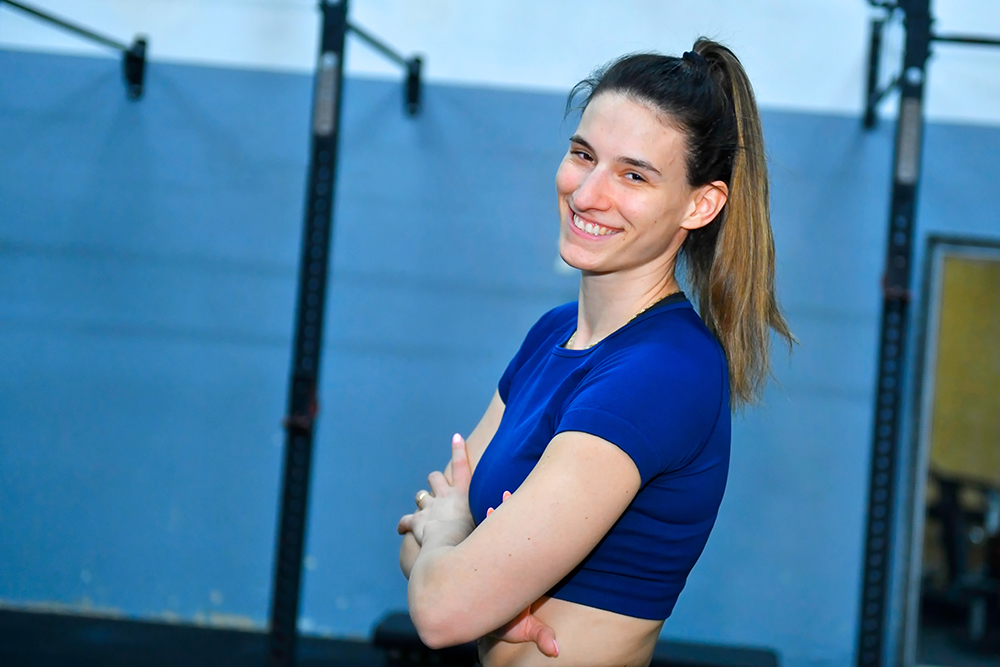

Sem Eva Pivk, aktivna športnica in zagovornica zdravega načina življenja. S športom se ukvarjam že od otroštva in resnično verjamem, da me bo spremljal vse življenje.
Moja športna pot se je začela z atletiko. Kariero sem zaključila po 22-ih letih zaradi poškodbe kolen, svoje znanje pa - kot trenerka atletike - še vedno prenašam na mlajše generacije.
Atletika me je naučila reda, discipline, vztrajnosti in predvsem tega, da lahko vedno postaneš še boljši.
Zaradi pretreniranosti so prišle poškodbe to pa je s seboj pripeljalo nezadovoljstvo, slabo samozavest in nizko samopodobo. Zavedala sem se, da potrebujem spremembo in začela sem se ukvarjati s fitnesom in podobnimi oblikami vadbe. Med študijem na Fakulteti za upravo sem se veliko ukvarjala z velnesom in pridobila licenco za športne masaže. Po končanem študiju me je pot popeljala na Fakulteto za šport, kjer študiram za športno pedagoginjo. Tekom študija sem se usmerila v fitnes in na fakulteti tudi pridobila licenco.
Študij na Fakulteti za šport, licenci za osebno trenerko in trenerko atletike so mi poleg praktičnega znanja in izkušenj dale tudi teoretično znanje s področja športne vzgoje, kineziologije, anatomije, športne prehrane, športne psihologije, fiziologije, medicine športa …
Športno področje se ves čas spreminja, učenja nikoli ni konec, zato svoje znanje nadgrajujem z dodatnimi formalnimi izobraževanji, s prebiranjem domače in tuje literature, člankov in raziskav s področja treningov in prehrane. Strokovnost je tudi na tem področju izredno pomembna.
Treninge dojemam kot privilegij in uživam v tem, da lahko pomagam ljudem doseči njihove cilje. Vsaka posameznica ali posameznik je unikaten in si zasluži kakovostno celostno obravnavo.
Z mojo pomočjo si začrtaj cilje, treniraj in se podaj na pot do zmage tudi ti! 😉